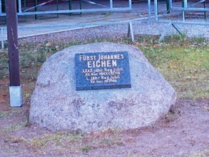
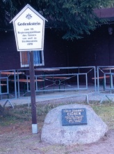
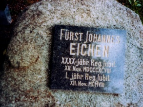
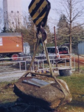

| Lage des Ortes: | an der deutsch-tschechischen Grenze, nordwestlich von Zittau. |
| Bezirk: | Löbau-Zittau |
| Herrschaft: | Rumburg (Rumburk) |
| Forstamt: | Rumburg (Rumburk) |
| Forstrevier: | Gersdorf |
| Evidenznummer: | 092 |
| Abmessungen: | nicht festgestellt |
Beschreibung:
Ein nicht bearbeiteter Stein, auf dem eine polierte Platte mit folgender Inschrift befestigt ist:
„Fürst Johannes EICHEN XXXX jähr. Reg. Jubil. XII. Nov. MDCCCXCVIII L. jähr. Reg. Jubil. XII. Nov. MCMVIII.“Der ursprüngliche Standort des Denkmals befand sich 2 km südlich von Neugersdorf. In seiner unmittelbaren Umgebung wurden im Jahre 2008 umfangreiche Forstarbeiten vorgenommen. Bei diesen Arbeiten bestand die Gefahr, dass der Stein entweder beschädigt oder in das Erdreich gedrückt wird. Der Gedenkstein wurde von den Mitgliedern der Privilegierten Schützengesellschaft Neugersdorf gerettet und 26. 4. 2008 vor dem Schützenheim in Neugersdorf platziert.
2008 - Fotos: Privilegierte Schützengesellschaft Neugersdorf




{kind=link}
{kind=link}
{kind=link}
{kind=link}